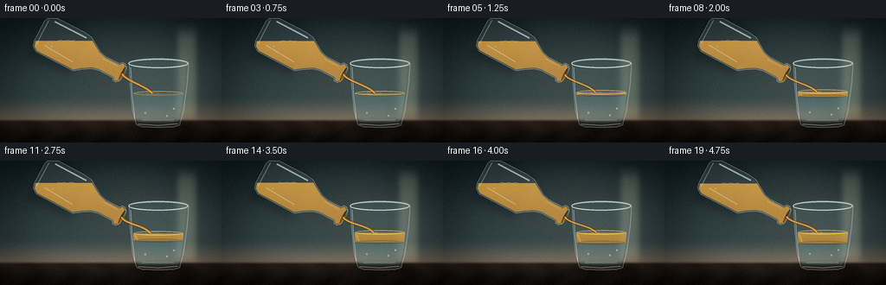
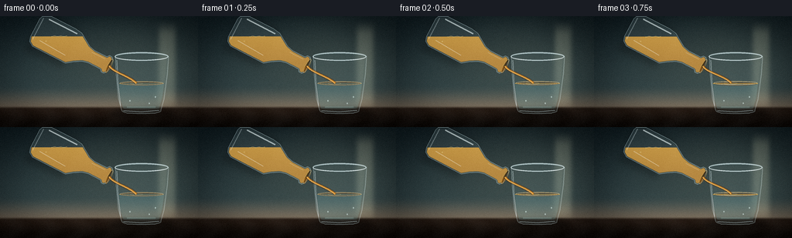
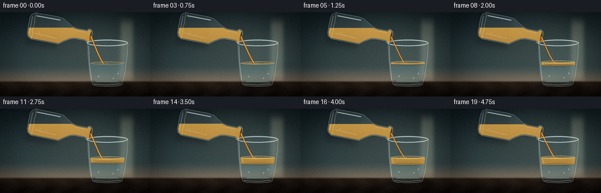
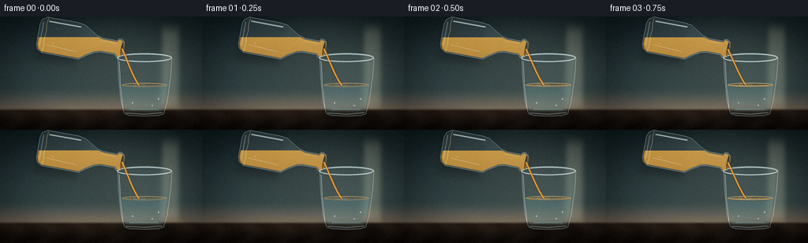

CODING AGENTS AS PIXEL WORLD MODELS
traex/DeepSeek-V4.1-Flash · phygen_136
点击播放 · 原生 RGB 像素
逐轮保存的候选
回放视频、检查图与代码变化。
每份候选均可单独播放。实际图片检查记录在下方工具轨迹中。
候选 01播放与检查图
点击播放 · 原生 RGB 像素

展开代码变化
--- 上一保存版本
+++ 本次保存版本
@@ -0,0 +1,428 @@
+from pathlib import Path
+
+import numpy as np
+from PIL import Image, ImageDraw, ImageFilter
+from scipy.ndimage import binary_erosion, gaussian_filter
+
+import artifact_io
+
+
+ROOT = Path(__file__).resolve().parent
+W, H = 256, 144
+SS = 4
+RW, RH = W * SS, H * SS
+TAU = np.pi * 2
+
+
+def blank_mask():
+ return Image.new("L", (RW, RH), 0)
+
+
+def mask_from(draw_fn):
+ image = blank_mask()
+ draw_fn(ImageDraw.Draw(image))
+ return np.asarray(image, dtype=np.float32) / 255.0
+
+
+def polygon_mask(points, fill=255):
+ scaled = [(float(x * SS), float(y * SS)) for x, y in points]
+ return mask_from(lambda d: d.polygon(scaled, fill=fill))
+
+
+def ellipse_mask(cx, cy, rx, ry, fill=255):
+ box = (
+ (cx - rx) * SS,
+ (cy - ry) * SS,
+ (cx + rx) * SS,
+ (cy + ry) * SS,
+ )
+ return mask_from(lambda d: d.ellipse(box, fill=fill))
+
+
+def ellipse_ring(cx, cy, rx, ry, width=1.0, fill=255):
+ box = (
+ (cx - rx) * SS,
+ (cy - ry) * SS,
+ (cx + rx) * SS,
+ (cy + ry) * SS,
+ )
+ return mask_from(
+ lambda d: d.ellipse(box, outline=fill, width=max(1, round(width * SS)))
+ )
+
+
+def line_mask(points, width, fill=255):
+ scaled = [(float(x * SS), float(y * SS)) for x, y in points]
+ return mask_from(
+ lambda d: d.line(scaled, fill=fill, width=max(1, round(width * SS)), joint="curve")
+ )
+
+
+def soft(mask, sigma):
+ return gaussian_filter(mask, sigma=sigma * SS, mode="nearest")
+
+
+def over(dst, color, mask):
+ color = np.asarray(color, dtype=np.float32)
+ alpha = np.clip(mask, 0.0, 1.0)[..., None]
+ return dst * (1.0 - alpha) + color * alpha
+
+
+def screen(dst, color, mask):
+ color = np.asarray(color, dtype=np.float32)
+ alpha = np.clip(mask, 0.0, 1.0)[..., None]
+ return 1.0 - (1.0 - dst) * (1.0 - color * alpha)
+
+
+def smoothstep(a, b, value):
+ t = np.clip((value - a) / (b - a), 0.0, 1.0)
+ return t * t * (3.0 - 2.0 * t)
+
+
+def rotate_point(cx, cy, angle, lx, ly):
+ ca, sa = np.cos(angle), np.sin(angle)
+ return cx + lx * ca - ly * sa, cy + lx * sa + ly * ca
+
+
+def rotated_points(cx, cy, angle, points):
+ return [rotate_point(cx, cy, angle, x, y) for x, y in points]
+
+
+def bezier(p0, p1, p2, p3, count=90):
+ t = np.linspace(0.0, 1.0, count)[:, None]
+ p0, p1, p2, p3 = map(lambda p: np.asarray(p, dtype=np.float32), (p0, p1, p2, p3))
+ return (
+ (1.0 - t) ** 3 * p0
+ + 3.0 * (1.0 - t) ** 2 * t * p1
+ + 3.0 * (1.0 - t) * t**2 * p2
+ + t**3 * p3
+ )
+
+
+def local_x(x):
+ return x / (RW - 1)
+
+
+def local_y(y):
+ return y / (RH - 1)
+
+
+def build_background():
+ yy, xx = np.mgrid[0:RH, 0:RW].astype(np.float32)
+ u, v = local_x(xx), local_y(yy)
+
+ top = np.array([0.075, 0.125, 0.145], dtype=np.float32)
+ middle = np.array([0.245, 0.315, 0.320], dtype=np.float32)
+ low = np.array([0.455, 0.405, 0.345], dtype=np.float32)
+ base = top[None, None, :] * (1.0 - v[..., None]) + middle[None, None, :] * v[..., None]
+ lower = smoothstep(0.62, 0.86, v)[..., None]
+ base = base * (1.0 - lower) + low[None, None, :] * lower
+
+ glow = np.exp(-(((u - 0.62) / 0.40) ** 2 + ((v - 0.39) / 0.44) ** 2))
+ base += np.array([0.085, 0.078, 0.058], dtype=np.float32)[None, None, :] * glow[..., None]
+
+ window = np.exp(-((u - 0.845) / 0.045) ** 4) * smoothstep(0.02, 0.18, v) * (1.0 - smoothstep(0.72, 0.91, v))
+ base += np.array([0.16, 0.15, 0.12], dtype=np.float32)[None, None, :] * window[..., None]
+
+ table_y = 0.815
+ table = smoothstep(table_y - 0.008, table_y + 0.022, v)
+ table_color = (
+ np.array([0.165, 0.125, 0.098], dtype=np.float32)[None, None, :]
+ * (1.0 - smoothstep(0.82, 1.0, v)[..., None])
+ + np.array([0.075, 0.060, 0.050], dtype=np.float32)[None, None, :]
+ * smoothstep(0.82, 1.0, v)[..., None]
+ )
+ wood = 0.012 * np.sin(u * 37.0 + np.sin(v * 19.0) * 1.7)
+ table_color += wood[..., None]
+ base = base * (1.0 - table[..., None]) + table_color * table[..., None]
+
+ vignette = 1.0 - 0.24 * smoothstep(0.38, 0.92, np.sqrt(((u - 0.5) / 0.70) ** 2 + ((v - 0.48) / 0.80) ** 2))
+ base *= vignette[..., None]
+ return np.clip(base, 0.0, 1.0)
+
+
+def target_geometry(progress):
+ pulse = 0.32 * np.sin(progress * TAU * 2.2 + 0.3)
+ oil_surface = 87.0 - 4.4 * progress + pulse
+ interface = 87.0 + 8.4 * progress - 0.22 * pulse
+ return oil_surface, interface
+
+
+def draw_target_glass(image, progress, stream_impact):
+ outer = polygon_mask(
+ [
+ (149.0, 52.0),
+ (218.0, 52.0),
+ (216.5, 75.0),
+ (212.0, 108.0),
+ (208.0, 122.0),
+ (201.0, 126.0),
+ (164.0, 126.0),
+ (157.0, 122.0),
+ (153.0, 107.0),
+ (150.0, 76.0),
+ ]
+ )
+ outer = np.maximum(outer, ellipse_mask(183.0, 52.0, 34.5, 5.3))
+ outer = np.maximum(outer, ellipse_mask(183.0, 123.0, 25.3, 3.6))
+ interior = polygon_mask(
+ [
+ (152.0, 55.0),
+ (215.0, 55.0),
+ (213.4, 75.0),
+ (209.4, 107.0),
+ (205.7, 119.5),
+ (199.4, 122.7),
+ (165.5, 122.7),
+ (159.2, 119.5),
+ (155.3, 107.0),
+ (153.0, 76.0),
+ ]
+ )
+ interior = np.maximum(interior, ellipse_mask(183.0, 55.0, 31.0, 3.9))
+ wall = np.clip(outer - interior, 0.0, 1.0)
+
+ yy, xx = np.mgrid[0:RH, 0:RW].astype(np.float32)
+ fy, fx = yy / SS, xx / SS
+
+ shadow = ellipse_mask(183.5, 126.8, 42.0, 6.2)
+ shadow = soft(shadow, 3.3) * 0.42
+ image = over(image, (0.035, 0.034, 0.030), shadow)
+
+ reflected = np.roll(gaussian_filter(image, sigma=(1.1 * SS, 1.8 * SS, 0)), -5 * SS, axis=1)
+ tint = np.array([0.59, 0.72, 0.72], dtype=np.float32)
+ body_glass = soft(outer, 0.15) * 0.19
+ image = image * (1.0 - body_glass[..., None]) + reflected * body_glass[..., None]
+ image = over(image, tint, interior * 0.10)
+
+ oil_surface, interface = target_geometry(progress)
+ fluid_bottom = smoothstep(121.8, 118.2, fy)
+ water = interior * (fy >= interface) * fluid_bottom
+ oil = interior * (fy >= oil_surface) * (fy < interface) * fluid_bottom
+
+ refracted = np.roll(gaussian_filter(image, sigma=(1.6 * SS, 2.8 * SS, 0)), -3 * SS, axis=1)
+ water_alpha = water * (0.24 + 0.09 * smoothstep(0.92, 0.60, local_y(yy)))
+ image = image * (1.0 - water_alpha[..., None]) + refracted * water_alpha[..., None]
+ water_color = (
+ np.array([0.46, 0.70, 0.72], dtype=np.float32)[None, None, :]
+ * (1.0 - 0.22 * smoothstep(interface, 122.0, fy)[..., None])
+ + np.array([0.23, 0.45, 0.48], dtype=np.float32)[None, None, :]
+ * (0.22 * smoothstep(interface, 122.0, fy)[..., None])
+ )
+ image = over(image, water_color, water * 0.18)
+
+ oil_v = np.clip((fy - oil_surface) / np.maximum(interface - oil_surface, 1.0), 0.0, 1.0)
+ oil_color = (
+ np.array([0.95, 0.68, 0.23], dtype=np.float32)[None, None, :] * (1.0 - 0.22 * oil_v[..., None])
+ + np.array([0.61, 0.31, 0.075], dtype=np.float32)[None, None, :] * (0.22 * oil_v[..., None])
+ )
+ image = over(image, oil_color, oil * 0.64)
+
+ left_oil_glow = line_mask([(155.5, oil_surface + 2.0), (158.8, interface - 1.0)], 1.4)
+ image = screen(image, (0.98, 0.77, 0.34), left_oil_glow * oil * 0.28)
+ lower_water_glow = line_mask([(164.0, 118.0), (201.0, 118.0)], 2.2)
+ image = screen(image, (0.48, 0.72, 0.70), lower_water_glow * interior * 0.20)
+
+ surface_ring = ellipse_ring(183.0, oil_surface, 28.4, 2.5, width=1.0)
+ surface_ring *= interior
+ image = screen(image, (1.0, 0.77, 0.36), surface_ring * 0.58)
+
+ interface_ring = ellipse_ring(183.0, interface, 27.4, 2.1, width=0.9)
+ interface_ring *= interior
+ image = over(image, (0.38, 0.20, 0.055), interface_ring * 0.40)
+
+ if stream_impact > 0.01:
+ ripple_r = 4.0 + 5.0 * (0.5 + 0.5 * np.sin(progress * TAU * 2.0))
+ ripple = ellipse_ring(176.5, oil_surface + 0.3, ripple_r, ripple_r * 0.16, width=0.55)
+ image = screen(image, (1.0, 0.82, 0.42), ripple * stream_impact * 0.33)
+
+ bubbles = [(168.0, 110.0 - 2.0 * progress), (193.0, 113.5 - 4.0 * progress), (201.0, 105.0 - 1.5 * progress)]
+ for bx, by in bubbles:
+ bm = ellipse_mask(bx, by, 0.65, 0.95) * interior
+ bm += ellipse_ring(bx, by, 0.72, 1.02, width=0.35) * interior * 0.7
+ image = screen(image, (0.82, 0.96, 0.94), bm * 0.48)
+
+ edge = np.clip(outer - binary_erosion(outer > 0.5, iterations=max(1, SS // 2)).astype(np.float32), 0.0, 1.0)
+ edge = soft(edge, 0.18)
+ image = screen(image, (0.84, 0.95, 0.96), edge * 0.58)
+ image = over(image, (0.62, 0.78, 0.80), wall * 0.075)
+
+ left_edge = line_mask([(151.0, 57.0), (152.7, 87.0), (155.8, 116.0)], 0.85)
+ right_edge = line_mask([(216.2, 57.0), (212.3, 91.0), (207.0, 119.5)], 0.55)
+ image = screen(image, (0.92, 0.99, 1.0), left_edge * 0.53)
+ image = over(image, (0.17, 0.28, 0.30), right_edge * 0.22)
+
+ rim_outer = ellipse_ring(183.0, 52.4, 34.6, 5.4, width=1.15)
+ rim_inner = ellipse_ring(183.0, 52.7, 31.2, 4.0, width=0.55)
+ image = screen(image, (0.88, 0.98, 1.0), rim_outer * 0.67)
+ image = over(image, (0.35, 0.50, 0.51), rim_inner * 0.22)
+ rim_front = rim_outer * smoothstep(52.5, 55.2, fy) * (1.0 - smoothstep(56.0, 57.5, fy))
+ image = screen(image, (1.0, 1.0, 0.98), rim_front * 0.50)
+
+ bottom_front = line_mask([(159.5, 122.5), (183.0, 124.2), (205.5, 122.0)], 1.1)
+ image = screen(image, (0.82, 0.94, 0.96), bottom_front * 0.48)
+ return image
+
+
+def draw_oil_vessel(image, angle, progress):
+ cx, cy = 76.5, 31.0
+ outline_local = [
+ (-21.5, -22.0),
+ (-23.0, -12.0),
+ (-23.0, 27.0),
+ (-19.0, 33.0),
+ (-13.0, 35.0),
+ (13.0, 35.0),
+ (19.0, 33.0),
+ (23.0, 27.0),
+ (23.0, -21.0),
+ (17.0, -29.0),
+ (11.0, -39.0),
+ (9.0, -47.0),
+ (9.0, -65.0),
+ (12.0, -67.0),
+ (12.0, -71.0),
+ (8.0, -74.0),
+ (-8.0, -74.0),
+ (-12.0, -71.0),
+ (-12.0, -67.0),
+ (-9.0, -65.0),
+ (-9.0, -47.0),
+ (-11.0, -39.0),
+ (-17.0, -29.0),
+ ]
+ outline = rotated_points(cx, cy, angle, outline_local)
+ outer = polygon_mask(outline)
+ interior = binary_erosion(outer > 0.5, iterations=max(1, int(1.6 * SS))).astype(np.float32)
+ interior = gaussian_filter(interior, sigma=0.22 * SS)
+
+ yy, xx = np.mgrid[0:RH, 0:RW].astype(np.float32)
+ fy, fx = yy / SS, xx / SS
+
+ shadow = polygon_mask(
+ rotated_points(cx + 1.0, cy + 4.0, angle, [(-27, -17), (27, -17), (30, 37), (-30, 37)])
+ )
+ shadow = soft(shadow, 4.0) * 0.22
+ image = over(image, (0.035, 0.035, 0.033), shadow)
+
+ image = over(image, (0.53, 0.72, 0.76), outer * 0.085)
+ image = over(image, (0.82, 0.93, 0.94), interior * 0.065)
+
+ oil_line = 26.0 + 0.55 * np.sin(progress * TAU * 1.1)
+ oil = interior * (fy > oil_line)
+ oil_v = np.clip((fy - oil_line) / 35.0, 0.0, 1.0)
+ oil_color = (
+ np.array([0.98, 0.72, 0.28], dtype=np.float32)[None, None, :] * (1.0 - 0.24 * oil_v[..., None])
+ + np.array([0.58, 0.27, 0.055], dtype=np.float32)[None, None, :] * (0.24 * oil_v[..., None])
+ )
+ image = over(image, oil_color, oil * 0.70)
+
+ local_surface = []
+ for lx in np.linspace(-22.0, 22.0, 20):
+ wx, wy = rotate_point(cx, cy, angle, lx, 0.0)
+ local_surface.append((wx, oil_line + 0.45 * np.sin(lx * 0.36 + progress * 5.0)))
+ surface_line = line_mask(local_surface, 0.7) * interior
+ image = screen(image, (1.0, 0.83, 0.44), surface_line * 0.43)
+
+ body_hl1 = rotated_points(cx, cy, angle, [(-18.0, -17.0), (-18.0, 24.0)])
+ body_hl2 = rotated_points(cx, cy, angle, [(14.0, -16.0), (12.0, 22.0)])
+ neck_hl = rotated_points(cx, cy, angle, [(-5.4, -45.0), (-5.4, -64.0)])
+ base_hl = rotated_points(cx, cy, angle, [(-16.0, 31.0), (15.0, 31.0)])
+ image = screen(image, (0.94, 1.0, 1.0), line_mask(body_hl1, 1.7) * interior * 0.58)
+ image = screen(image, (0.92, 1.0, 1.0), line_mask(body_hl2, 0.75) * interior * 0.38)
+ image = screen(image, (0.95, 1.0, 1.0), line_mask(neck_hl, 0.6) * interior * 0.46)
+ image = screen(image, (0.92, 0.99, 1.0), line_mask(base_hl, 0.9) * interior * 0.33)
+
+ rim_center = rotate_point(cx, cy, angle, 0.0, -73.0)
+ rim_pts = []
+ for a in np.linspace(0.0, TAU, 48, endpoint=False):
+ lx, ly = 10.0 * np.cos(a), 2.25 * np.sin(a)
+ rim_pts.append(rotate_point(rim_center[0], rim_center[1], angle, lx, ly))
+ mouth = polygon_mask(rim_pts)
+ mouth_edge = np.clip(mouth - binary_erosion(mouth > 0.5, iterations=max(1, SS // 2)).astype(np.float32), 0.0, 1.0)
+ image = over(image, (0.14, 0.10, 0.045), mouth * 0.68)
+ image = screen(image, (1.0, 0.84, 0.44), mouth_edge * 0.66)
+ image = over(image, (0.66, 0.40, 0.08), mouth * smoothstep(rim_center[1] - 0.7, rim_center[1] + 1.8, fy) * 0.48)
+
+ edge = np.clip(outer - binary_erosion(outer > 0.5, iterations=max(1, SS // 2)).astype(np.float32), 0.0, 1.0)
+ image = screen(image, (0.84, 0.96, 0.98), soft(edge, 0.16) * 0.63)
+
+ bubble_specs = [(-5.0, 9.0, 1.15), (9.0, 14.0, 0.7), (-11.0, 20.0, 0.55)]
+ for lx, ly, r in bubble_specs:
+ bx, by = rotate_point(cx, cy, angle, lx, ly + 1.2 * np.sin(progress * 5.0 + lx))
+ bm = ellipse_ring(bx, by, r, r * 0.78, width=0.4) * oil
+ image = screen(image, (1.0, 0.92, 0.64), bm * 0.44)
+ return image, rim_center
+
+
+def draw_stream(image, start, end, progress, strength):
+ wobble = 0.8 * np.sin(progress * TAU * 2.7 + 0.4)
+ c1 = (start[0] + 4.0 + 0.25 * wobble, start[1] + 8.0)
+ c2 = (end[0] - 7.0, end[1] - 9.0 + 0.6 * wobble)
+ pts = bezier(start, c1, c2, (end[0] + wobble, end[1]), count=100)
+ curve = [(float(x), float(y)) for x, y in pts]
+
+ width = 2.25 + 0.35 * np.sin(progress * TAU * 1.8 + 1.1)
+ shadow = line_mask(curve, width + 2.0)
+ image = over(image, (0.20, 0.105, 0.025), shadow * 0.30 * strength)
+ core = line_mask(curve, width)
+ image = over(image, (0.84, 0.49, 0.105), core * 0.82 * strength)
+ inner = line_mask([(x - 0.35, y) for x, y in curve], max(0.8, width * 0.38))
+ image = screen(image, (1.0, 0.76, 0.30), inner * 0.47 * strength)
+ glint = line_mask([(x - 0.72, y) for x, y in curve], 0.42)
+ image = screen(image, (1.0, 0.95, 0.73), glint * 0.58 * strength)
+
+ if progress > 0.90:
+ drop_t = (progress - 0.90) / 0.10
+ dx = end[0] - 2.0 + 0.5 * np.sin(progress * 17.0)
+ dy = end[1] - 5.0 + 4.0 * drop_t
+ drop = ellipse_mask(dx, dy, 1.05, 1.55)
+ image = over(image, (0.86, 0.52, 0.12), drop * 0.73 * (1.0 - 0.45 * drop_t))
+ image = screen(image, (1.0, 0.86, 0.50), ellipse_ring(dx - 0.2, dy - 0.25, 0.6, 0.85, width=0.3) * 0.42)
+ return image
+
+
+def render_frame(index, total):
+ progress = index / max(total - 1, 1)
+ eased = 0.06 + 0.94 * smoothstep(0.02, 0.95, progress)
+ image = build_background()
+ stream_impact = 0.72 + 0.28 * np.sin(progress * TAU * 1.7) ** 2
+
+ image = draw_target_glass(image, eased, stream_impact)
+ angle = np.deg2rad(117.0 + 1.2 * np.sin(progress * TAU * 0.42 + 0.2))
+ image, spout = draw_oil_vessel(image, angle, progress)
+
+ oil_surface, _ = target_geometry(eased)
+ impact_x = 176.0 + 1.4 * np.sin(progress * TAU * 1.3)
+ image = draw_stream(image, spout, (impact_x, oil_surface + 0.2), progress, 0.92)
+
+ yy, xx = np.mgrid[0:RH, 0:RW].astype(np.float32)
+ u, v = local_x(xx), local_y(yy)
+ vignette = 1.0 - 0.12 * smoothstep(0.42, 1.0, np.sqrt(((u - 0.5) / 0.70) ** 2 + ((v - 0.49) / 0.82) ** 2))
+ image *= vignette[..., None]
+
+ bright = np.maximum(image - 0.67, 0.0)
+ bloom = gaussian_filter(bright, sigma=(2.8 * SS, 2.8 * SS, 0))
+ image = 1.0 - (1.0 - image) * (1.0 - np.clip(bloom * 0.28, 0.0, 0.4))
+
+ frame = np.asarray(
+ Image.fromarray(np.uint8(np.clip(image, 0.0, 1.0) * 255.0), "RGB").resize(
+ (W, H), Image.Resampling.LANCZOS
+ ),
+ dtype=np.float32,
+ ) / 255.0
+ frame = np.clip((frame - 0.5) * 1.035 + 0.5, 0.0, 1.0)
+ rng = np.random.default_rng(1047 + index)
+ grain = rng.normal(0.0, 0.0065, (H, W, 1)).astype(np.float32)
+ frame = np.clip(frame + grain, 0.0, 1.0)
+ return np.uint8(np.round(frame * 255.0))
+
+
+def main():
+ frames = np.stack([render_frame(i, 20) for i in range(20)], axis=0)
+ artifact_io.save(frames, ROOT)
+ print(f"saved {frames.shape} RGB frames to {ROOT}")
+
+
+if __name__ == "__main__":
+ main()
候选 02播放与检查图
点击播放 · 原生 RGB 像素

展开代码变化
--- 上一保存版本
+++ 本次保存版本
@@ -265,7 +265,7 @@
def draw_oil_vessel(image, angle, progress):
- cx, cy = 76.5, 31.0
+ cx, cy = 80.0, 58.0
outline_local = [
(-21.5, -22.0),
(-23.0, -12.0),
@@ -319,8 +319,8 @@
local_surface = []
for lx in np.linspace(-22.0, 22.0, 20):
- wx, wy = rotate_point(cx, cy, angle, lx, 0.0)
- local_surface.append((wx, oil_line + 0.45 * np.sin(lx * 0.36 + progress * 5.0)))
+ ly = oil_line + 0.45 * np.sin(lx * 0.36 + progress * 5.0)
+ local_surface.append(rotate_point(cx, cy, angle, lx, ly))
surface_line = line_mask(local_surface, 0.7) * interior
image = screen(image, (1.0, 0.83, 0.44), surface_line * 0.43)
@@ -389,7 +389,7 @@
stream_impact = 0.72 + 0.28 * np.sin(progress * TAU * 1.7) ** 2
image = draw_target_glass(image, eased, stream_impact)
- angle = np.deg2rad(117.0 + 1.2 * np.sin(progress * TAU * 0.42 + 0.2))
+ angle = np.deg2rad(63.0 + 1.2 * np.sin(progress * TAU * 0.42 + 0.2))
image, spout = draw_oil_vessel(image, angle, progress)
oil_surface, _ = target_geometry(eased)
候选 03播放与检查图
候选 04播放与检查图
点击播放 · 原生 RGB 像素


展开代码变化
--- 上一保存版本
+++ 本次保存版本
@@ -265,7 +265,7 @@
def draw_oil_vessel(image, angle, progress):
- cx, cy = 80.0, 58.0
+ cx, cy = 83.0, 28.0
outline_local = [
(-21.5, -22.0),
(-23.0, -12.0),
@@ -389,7 +389,7 @@
stream_impact = 0.72 + 0.28 * np.sin(progress * TAU * 1.7) ** 2
image = draw_target_glass(image, eased, stream_impact)
- angle = np.deg2rad(63.0 + 1.2 * np.sin(progress * TAU * 0.42 + 0.2))
+ angle = np.deg2rad(100.0 + 1.2 * np.sin(progress * TAU * 0.42 + 0.2))
image, spout = draw_oil_vessel(image, angle, progress)
oil_surface, _ = target_geometry(eased)
可观测工具轨迹
实际执行的命令与返回图片。
命令 1exit 0
/bin/bash -c 'cat prompt.txt'
命令 2exit 0
/bin/bash -c 'cat GENERATION_RULES.md'
命令 3exit 0
/bin/bash -c 'cat task_spec.json'
命令 4exit 0
/bin/bash -c "find . -maxdepth 2 -type f -printf '%p %s bytes\\n' | sort"
命令 5exit 0
/bin/bash -c "sed -n '1,260p' artifact_io.py"
命令 6exit 0
/bin/bash -c "sed -n '1,260p' player_template.html"
命令 7exit 0
/bin/bash -c "python - <<'PY' import importlib.util for name in ['numpy','PIL','cv2','imageio','matplotlib','scipy','moviepy']: print(name, bool(importlib.util.find_spec(name))) PY"
命令 8exit 0
/bin/bash -c 'command -v chafa || command -v viu || command -v img2txt || command -v jp2 || true'
命令 9exit 0
/bin/bash -c 'command -v convert || command -v magick || true'
命令 10exit 0
/bin/bash -c 'python generate.py'
命令 11exit 0
/bin/bash -c "python - <<'PY'
from PIL import Image
import numpy as np
for fi in [0,6,12,19]:
im=np.asarray(Image.open(f'frames/{fi:02d}.png').convert('RGB'),dtype=float)
g=im.mean(2)
chars=' .,:;irsXA253hMHGS#9B&@'
h,w=g.shape
# 64x36, average cells
out=[]
for y in range(36):
row=''
for x in range(64):
v=g[y*4:(y+1)*4,x*4:(x+1)*4].mean()
row+=chars[min(len(chars)-1,int(v/256*len(chars)))]
out.append(row)
print('\\nFRAME',fi)
print('\\n'.join(out))
PY"命令 12exit 0
/bin/bash -c "python - <<'PY'
from PIL import Image
im=Image.open('inspection.png')
im.crop((0,0,1024,330)).resize((1536,495)).save('.tmp/inspection_large.png')
print(im.size)
PY"命令 13exit 0
/bin/bash -c 'python generate.py'
命令 14exit 0
/bin/bash -c "python - <<'PY'
from PIL import Image
import numpy as np
for fi in [0,10,19]:
im=np.asarray(Image.open(f'frames/{fi:02d}.png').convert('RGB'),dtype=float)
g=im.mean(2)
chars=' .,:;irsXA253hMHGS#9B&@'
out=[]
for y in range(36):
row=''
for x in range(64):
v=g[y*4:(y+1)*4,x*4:(x+1)*4].mean()
row+=chars[min(len(chars)-1,int(v/256*len(chars)))]
out.append(row)
print('\\nFRAME',fi)
print('\\n'.join(out))
PY"命令 15exit 0
/bin/bash -c "python - <<'PY'
from PIL import Image
import numpy as np, cv2
for fi in range(20):
a=np.asarray(Image.open(f'frames/{fi:02d}.png')).astype(float)/255
r,g,b=a[...,0],a[...,1],a[...,2]
amber=(r>g*1.12)&(g>b*1.25)&(r>0.35)
cyan=(g>r*1.12)&(b>r*1.08)&(g>0.30)
def bbox(m):
ys,xs=np.where(m)
return (int(xs.min()),int(ys.min()),int(xs.max()),int(ys.max()),int(m.sum())) if len(xs) else None
print(f'{fi:02d} amber={bbox(amber)} cyan={bbox(cyan)} mean={a.mean():.3f} sat={((a.max(2)-a.min(2))).mean():.3f}')
PY"命令 16exit 0
/bin/bash -c "python - <<'PY'
import numpy as np
cx,cy=80,58; angle=np.deg2rad(63)
pts=[(-21.5,-22),(-23,27),(-13,35),(13,35),(23,27),(23,-21),(9,-47),(9,-65),(12,-71),(8,-74),(-8,-74),(-12,-71),(-9,-65),(-9,-47)]
xs=[];ys=[]
for x,y in pts:
xs.append(cx+x*np.cos(angle)-y*np.sin(angle)); ys.append(cy+x*np.sin(angle)+y*np.cos(angle))
print('vessel bbox',min(xs),min(ys),max(xs),max(ys))
for p in [(0,-73),(-10,-73),(10,-73)]:
x,y=p; print(p,'->',cx+x*np.cos(angle)-y*np.sin(angle),cy+x*np.sin(angle)+y*np.cos(angle))
PY"命令 17exit 0
/bin/bash -c "python - <<'PY' import numpy as np cx,cy=83,28; angle=np.deg2rad(100) for p in [(0,-73),(-10,-73),(10,-73),(0,-40),(0,35)]: x,y=p; print(p,'->',round(cx+x*np.cos(angle)-y*np.sin(angle),2),round(cy+x*np.sin(angle)+y*np.cos(angle),2)) PY"
命令 18exit 0
/bin/bash -c 'python generate.py'
命令 19exit 0
/bin/bash -c "python - <<'PY'
from PIL import Image
import numpy as np
for fi in [0,10,19]:
im=np.asarray(Image.open(f'frames/{fi:02d}.png').convert('RGB'),dtype=float)
g=im.mean(2); chars=' .,:;irsXA253hMHGS#9B&@'
print('\\nFRAME',fi)
for y in range(36):
print(''.join(chars[min(len(chars)-1,int(g[y*4:(y+1)*4,x*4:(x+1)*4].mean()/256*len(chars)))] for x in range(64)))
PY"命令 20exit 0
/bin/bash -c "python - <<'PY'
from pathlib import Path
from PIL import Image
import numpy as np
files=sorted(Path('frames').glob('*.png'))
assert len(files)==20, len(files)
ims=[np.asarray(Image.open(p).convert('RGB')) for p in files]
assert all(a.shape==(144,256,3) and a.dtype==np.uint8 for a in ims)
assert all(a.std()>8 for a in ims)
d=[np.abs(ims[i].astype(np.int16)-ims[i-1].astype(np.int16)).mean() for i in range(1,20)]
print('frames:',len(files),'shape:',ims[0].shape)
print('nonblank std range:',min(a.std() for a in ims),max(a.std() for a in ims))
print('consecutive mean abs diff:', ' '.join(f'{v:.2f}' for v in d))
print('motion range:',min(d),max(d),'no frozen:',min(d)>0.1,'no jumps:',max(d)<20)
print('pixels.npz:',Path('pixels.npz').stat().st_size,'bytes')
print('index.html:',Path('index.html').stat().st_size,'bytes')
PY"保存候选 4 份；完成命令 20 次；可验证图片返回 0 张。原始 API 响应与完整日志保留在本地。